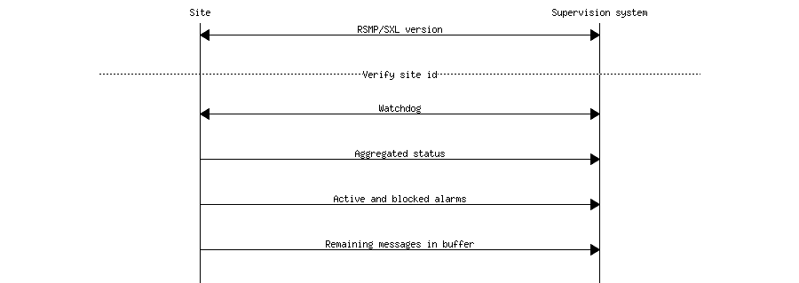

4.3. Transport of data¶
The message flow is different between different types of messages. Some message types are event driven and are sent without a request (push), while others are interaction driven, i.e. they sent in response to a request from a host system or other system (client-server).
To ensure that messages reach their destinations a message acknowledgment is sent for all messages. This gives the application a simple way to follow up on the message exchange. To communicate between equipments and supervisions systems a pure TCP connection is used (TCP/IP), and the data sent is based on the JSON format, ie formatted text.
Messages can be sent asynchronously, i.e. while the site or supervision system is waiting for an answer to a previously sent message it can can continue to send messages.
4.3.1. Security¶
Connections with RSMP must be protected with encryption if the purchaser requires it. Encryption settings needs to be configurable in both the supervision system as well as the site. For the encrypted communication, SSL 3.0/TLS 1.0 or later is used. Certificates should be used to verify the identities of equipments. Equipment which uses RSMP should contain a user interface for easy management of certificates. The issuing and renewal of certificates should should be made in cooperation with the purchaser unless other arrangement is agreed upon.
4.3.2. Communication establishment between sites and supervision system¶
When establishing communication, messages are sent in the following order.
- RSMP / SXL version (according to section RSMP/SXL Version). Verification of RSMP version, SXL version and site id.
- Watchdog (according to section Watchdog)
- Aggregated status (according to section Aggregated status message)
- All active and blocked alarm are sent (according to section Alarm messages).
- Any remaining messages in the equipment’s outgoing communication buffer are sent
Since only one version of the signal exchange list is allowed to be used at the communication establishment (according to the version message), each connected site must either:
- Use the same version of the signal exchange list via the same RSMP connection
- Use different signal exchange lists via separate RSMP connections. In this case the supervision system must listen on separate port numbers - one for each signal exchange list. This is required if there should be a possibility to update a signal exchange list without affecting the signal exchange lists for all the other connected sites.
4.3.3. Communication establishment between sites¶
- RSMP / SXL version (according to section RSMP/SXL Version). Verification of RSMP version, SXL version and site id.
- Watchdog (according to section Watchdog)
- Aggregated status (according to section Aggregated status message)
For communication between sites the following applies:
- The site id (siteId) which is sent in RSMP / SXL version is the connecting site’s own siteId
- If the siteId does not match with the expected siteId at other site the connection should be terminated. The purpose is to reduce the risk of establishing connection with the wrong site
- The component id (componentId) which is used in all messages is the connecting site’s component id
- Watchdog messages does not adjust the clock
- Alarm messages are not sent
- No communication buffer exist
4.3.4. Communication disruption¶
In the event of a communications failure the outgoing messages are stored in the equipment’s communication buffer. Once communication is restored all the messages in the communications buffer are sent.
Any subscriptions to status messages ceases if the communication failure occurs.
In the event of communications failure or power outage outgoing communication buffer of equipment not empty, this does not apply watchdog messages.
The internal communication buffer of the device must at a minimum be sized to be able to store 10000 messages. At full communication buffer the FIFO principle applies.
4.3.5. Transport between site and supervision system¶
Supervision system acts a socket server and waits for the site to connect. If the communication were to fail it is the site’s responsibility to reconnect.
4.3.6. Transport between sites¶
One site acts as socket server and waits for the other site to connect. If the communication were to fail it is the connecting site’s responsibility to reconnect.